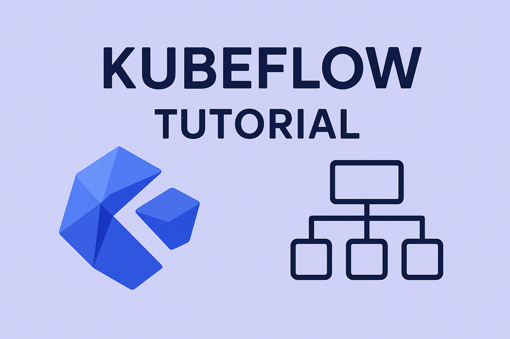

Kubeflow: A Comprehensive Guide to Machine Learning on Kubernetes

Introduction
Kubeflow is an open-source machine learning platform designed to make deployments of machine learning workflows on Kubernetes simple, portable, and scalable. Originally developed by Google and now maintained by the Kubeflow community, it provides a comprehensive ecosystem for managing the entire machine learning lifecycle—from experimentation and training to serving and monitoring—all within a Kubernetes environment.
The platform addresses one of the most significant challenges in modern machine learning: bridging the gap between data science experimentation and production deployment. By leveraging Kubernetes’ container orchestration capabilities, Kubeflow enables ML teams to build, deploy, and manage machine learning systems at scale while maintaining consistency across different environments.
Architecture and Core Components
High-Level Architecture
Kubeflow follows a microservices architecture built on top of Kubernetes. The platform consists of several interconnected components, each serving specific functions in the ML workflow:
Central Dashboard: The web-based user interface that provides a unified view of all Kubeflow components and allows users to manage their ML workflows through a single interface.
Kubeflow Pipelines: A comprehensive solution for building and deploying portable, scalable machine learning workflows based on Docker containers. It includes a user interface for managing and tracking experiments, jobs, and runs.
Kubeflow Notebooks: Provides Jupyter notebook servers for interactive development and experimentation. These notebooks run as Kubernetes pods and can be configured with different resource requirements and ML frameworks.
Katib: An automated machine learning system for hyperparameter tuning and neural architecture search. It supports various optimization algorithms and can run experiments across multiple nodes.
KServe (formerly KFServing): A serverless inferencing platform that provides standardized model serving capabilities with features like canary deployments, autoscaling, and multi-framework support.
Training Operators: A collection of Kubernetes operators for distributed training across different ML frameworks including TensorFlow, PyTorch, MPI, XGBoost, and PaddlePaddle.
Core Components Deep Dive
Kubeflow Pipelines
Kubeflow Pipelines represents the workflow orchestration heart of the platform. It enables users to define, deploy, and manage end-to-end ML workflows as code. Key features include:
Pipeline Definition: Workflows are defined using the Kubeflow Pipelines SDK, which allows data scientists to create reproducible, parameterized pipelines using Python. Each pipeline consists of multiple components that can be reused across different workflows.
Component Library: A rich ecosystem of pre-built components for common ML tasks such as data preprocessing, model training, evaluation, and deployment. Users can also create custom components using containerized applications.
Experiment Management: Built-in experiment tracking capabilities that allow teams to compare different pipeline runs, track metrics, and manage model versions systematically.
Artifact Management: Automatic tracking and versioning of pipeline artifacts including datasets, models, and intermediate results, enabling full reproducibility of ML experiments.
Kubeflow Notebooks
The notebook component provides a managed Jupyter environment optimized for machine learning workloads:
Multi-Framework Support: Pre-configured notebook images with popular ML frameworks like TensorFlow, PyTorch, scikit-learn, and R, eliminating environment setup overhead.
Resource Management: Dynamic resource allocation allowing users to specify CPU, memory, and GPU requirements for their notebook servers based on workload demands.
Persistent Storage: Integration with Kubernetes persistent volumes ensures that notebook work persists across server restarts and provides shared storage capabilities for team collaboration.
Custom Images: Support for custom Docker images enables teams to create standardized environments with specific tool configurations and dependencies.
Katib for AutoML
Katib provides automated machine learning capabilities focused on hyperparameter optimization and neural architecture search:
Optimization Algorithms: Support for various optimization strategies including random search, grid search, Bayesian optimization, and evolutionary algorithms.
Parallel Execution: Distributed hyperparameter tuning across multiple nodes, significantly reducing experiment time for computationally intensive tasks.
Early Stopping: Intelligent early stopping mechanisms that terminate underperforming trials, optimizing resource utilization.
Multi-Objective Optimization: Support for optimizing multiple metrics simultaneously, useful for scenarios requiring trade-offs between accuracy, latency, and model size.
KServe Model Serving
KServe provides enterprise-grade model serving capabilities:
Serverless Scaling: Automatic scaling to zero when no requests are being processed, and rapid scale-up based on incoming traffic patterns.
Multi-Framework Support: Native support for TensorFlow, PyTorch, scikit-learn, XGBoost, and custom serving runtimes through standardized prediction protocols.
Advanced Deployment Strategies: Built-in support for canary deployments, A/B testing, and blue-green deployments for safe model rollouts.
Explainability Integration: Integration with explainability frameworks to provide model interpretability alongside predictions.
Installation and Setup
Prerequisites
Before installing Kubeflow, ensure you have:
Kubernetes Cluster: A functioning Kubernetes cluster (version 1.21 or later recommended) with sufficient resources. For production deployments, consider managed Kubernetes services like Google GKE, Amazon EKS, or Azure AKS.
Storage: Persistent storage capabilities, preferably with dynamic provisioning support for optimal resource management.
Network Configuration: Proper ingress configuration for external access to the Kubeflow dashboard and services.
Resource Requirements: Minimum 4 CPU cores and 16GB RAM for basic installations, with additional resources needed based on workload requirements.
Installation Methods
Kubeflow Manifests
The most straightforward installation method uses Kubeflow manifests:
# Clone the manifests repository
git clone https://github.com/kubeflow/manifests.git
cd manifests
# Install Kubeflow components
while ! kustomize build example | kubectl apply -f -; do echo "Retrying to apply resources"; sleep 10; doneThis method provides fine-grained control over component selection and configuration but requires manual management of dependencies and updates.
Distribution-Specific Installations
Google Cloud: Use Google Cloud AI Platform Pipelines or deploy Kubeflow on GKE with optimized configurations for Google Cloud services.
AWS: Leverage AWS-specific distributions like Kubeflow on Amazon EKS, which provides pre-configured integrations with AWS services like S3, IAM, and CloudWatch.
Azure: Use Azure Machine Learning or deploy Kubeflow on AKS with Azure-specific optimizations and service integrations.
Post-Installation Configuration
After installation, configure essential settings:
Authentication: Set up appropriate authentication mechanisms, whether through Kubernetes RBAC, external identity providers like OIDC, or platform-specific authentication systems.
Storage Classes: Configure storage classes for different workload types, ensuring appropriate performance characteristics for training jobs, notebooks, and pipeline artifacts.
Resource Quotas: Establish resource quotas and limits to prevent resource contention and ensure fair resource allocation across users and teams.
Monitoring: Deploy monitoring solutions like Prometheus and Grafana to track cluster health, resource utilization, and application performance.
Building ML Pipelines
Pipeline Components
Kubeflow Pipelines are built from reusable components, each encapsulating a specific ML task:
Lightweight Components: Python functions that can be converted into pipeline components with minimal overhead, suitable for simple data processing tasks.
Containerized Components: More complex components packaged as Docker containers, providing isolation and reproducibility for sophisticated ML operations.
Pre-built Components: Community-contributed components available through the Kubeflow Pipelines component hub, covering common ML operations like data validation, feature engineering, and model evaluation.
Pipeline Development Workflow
Design Phase: Define the overall workflow structure, identifying key stages like data ingestion, preprocessing, training, evaluation, and deployment.
Component Development: Create or select appropriate components for each pipeline stage, ensuring proper input/output specifications and parameter definitions.
Pipeline Assembly: Use the Kubeflow Pipelines SDK to connect components, define data flow, and specify execution dependencies.
Testing and Validation: Test pipeline components individually and as complete workflows using smaller datasets before production deployment.
Best Practices for Pipeline Development
Modularity: Design components to be as modular and reusable as possible, enabling easier maintenance and testing.
Parameterization: Make pipelines highly parameterizable to support different datasets, model configurations, and deployment targets without code changes.
Error Handling: Implement comprehensive error handling and logging within components to facilitate debugging and monitoring.
Version Control: Maintain proper version control for both pipeline definitions and component implementations to enable rollbacks and reproducibility.
Model Training and Experimentation
Distributed Training
Kubeflow supports distributed training across multiple frameworks:
TensorFlow Training: The TFJob operator enables distributed TensorFlow training with parameter servers or all-reduce strategies, automatically handling worker coordination and failure recovery.
PyTorch Training: PyTorchJob operator supports distributed PyTorch training using various backends like NCCL and Gloo, with automatic scaling and fault tolerance.
MPI Training: For frameworks that support MPI-based distributed training, the MPIJob operator provides seamless integration with message-passing interfaces.
Experiment Management
Experiment Tracking: Kubeflow Pipelines automatically tracks experiment metadata, including parameters, metrics, and artifacts, enabling comprehensive experiment comparison and analysis.
Hyperparameter Tuning: Katib integration allows for sophisticated hyperparameter optimization experiments with support for various search algorithms and early stopping strategies.
Model Versioning: Built-in model versioning capabilities track model evolution over time, supporting model lineage and reproducibility requirements.
Resource Optimization
Auto-scaling: Dynamic resource allocation based on training workload requirements, optimizing cost and performance.
GPU Scheduling: Intelligent GPU scheduling and sharing capabilities to maximize utilization of expensive GPU resources.
Spot Instance Support: Integration with cloud provider spot instances for cost-effective training of non-critical workloads.
Model Serving and Deployment
Serving Strategies
Real-time Serving: Low-latency serving for applications requiring immediate responses, with support for high-throughput scenarios.
Batch Prediction: Efficient batch processing capabilities for scenarios where predictions can be computed offline or in batches.
Edge Deployment: Support for deploying models to edge devices and environments with limited resources.
Deployment Patterns
Canary Deployments: Gradual rollout of new model versions to a subset of traffic, enabling safe deployment with minimal risk.
A/B Testing: Side-by-side comparison of different model versions to evaluate performance improvements and business impact.
Shadow Deployment: Deploy new models alongside existing ones to evaluate performance without affecting production traffic.
Model Monitoring
Performance Monitoring: Continuous tracking of model performance metrics like accuracy, latency, and throughput.
Data Drift Detection: Monitoring for changes in input data distribution that might affect model performance.
Model Explainability: Integration with explainability tools to provide insights into model predictions and decision-making processes.
Integration with ML Ecosystem
Data Integration
Data Pipeline Integration: Seamless integration with data pipeline tools like Apache Airflow, allowing for end-to-end data-to-model workflows.
Feature Store Integration: Support for feature stores like Feast, enabling consistent feature engineering across training and serving environments.
Data Versioning: Integration with data versioning tools like DVC or Pachyderm for reproducible data management.
MLOps Integration
CI/CD Integration: Support for continuous integration and deployment pipelines, enabling automated model training, testing, and deployment.
Model Registry: Integration with model registries like MLflow for centralized model management and lifecycle tracking.
Monitoring and Observability: Integration with observability platforms for comprehensive monitoring of ML system health and performance.
Cloud Provider Integration
AWS Integration: Native support for AWS services like S3 for storage, IAM for authentication, and CloudWatch for monitoring.
Google Cloud Integration: Deep integration with Google Cloud services including BigQuery, Cloud Storage, and AI Platform services.
Azure Integration: Support for Azure services like Azure Blob Storage, Azure Active Directory, and Azure Monitor.
Best Practices and Considerations
Security Best Practices
Authentication and Authorization: Implement proper authentication mechanisms and role-based access control to secure ML workloads and data.
Network Security: Use network policies and service meshes to secure communication between components and external services.
Secret Management: Proper management of secrets and credentials using Kubernetes secrets or external secret management systems.
Container Security: Regular scanning of container images for vulnerabilities and use of minimal, hardened base images.
Performance Optimization
Resource Planning: Careful planning of compute resources based on workload characteristics and performance requirements.
Storage Optimization: Choose appropriate storage solutions based on access patterns, performance requirements, and cost considerations.
Network Optimization: Optimize network configuration for data-intensive workloads, particularly for distributed training scenarios.
Caching Strategies: Implement appropriate caching strategies for frequently accessed data and model artifacts.
Operational Excellence
Monitoring and Alerting: Comprehensive monitoring of system health, resource utilization, and application performance with appropriate alerting mechanisms.
Backup and Recovery: Regular backups of critical data and configurations with tested recovery procedures.
Documentation: Maintain comprehensive documentation of system architecture, operational procedures, and troubleshooting guides.
Training and Support: Ensure team members are properly trained on Kubeflow operations and best practices.
Use Cases and Success Stories
Enterprise ML Platforms
Large enterprises use Kubeflow to standardize their ML infrastructure across multiple teams and projects, providing consistent tooling and workflows while maintaining flexibility for different use cases.
Research Organizations
Academic and research institutions leverage Kubeflow’s flexibility and scalability to support diverse research projects with varying computational requirements and experimental approaches.
Startups and SMEs
Smaller organizations use Kubeflow to access enterprise-grade ML infrastructure without the overhead of building and maintaining custom solutions, accelerating their time to market.
Industry-Specific Applications
Financial Services: Risk modeling, fraud detection, and algorithmic trading applications benefit from Kubeflow’s scalability and compliance capabilities.
Healthcare: Medical imaging, drug discovery, and clinical decision support systems leverage Kubeflow’s robust pipeline management and model serving capabilities.
Retail and E-commerce: Recommendation systems, demand forecasting, and personalization engines use Kubeflow’s ability to handle large-scale, real-time ML workloads.
Future Directions and Roadmap
Emerging Technologies
AutoML Integration: Enhanced integration with automated machine learning tools and techniques for democratizing ML development.
Edge Computing: Improved support for edge deployment scenarios with optimized resource utilization and offline capabilities.
Federated Learning: Native support for federated learning scenarios where data cannot be centralized due to privacy or regulatory constraints.
Community Development
Component Ecosystem: Continued growth of the component ecosystem with contributions from the broader ML community.
Integration Partnerships: Expanding partnerships with cloud providers, ML tool vendors, and open-source projects to enhance the platform’s capabilities.
Standards Adoption: Participation in industry standards development to ensure compatibility and interoperability with other ML platforms and tools.
Conclusion
Kubeflow represents a significant advancement in making machine learning workflows more scalable, reproducible, and manageable. By leveraging Kubernetes’ container orchestration capabilities, it provides a comprehensive platform that addresses the full spectrum of ML lifecycle management needs.
The platform’s strength lies in its modularity and extensibility, allowing organizations to adopt components incrementally based on their specific requirements and maturity levels. Whether you’re a startup looking to establish ML infrastructure or an enterprise seeking to standardize ML operations across multiple teams, Kubeflow provides the foundation for building robust, scalable ML systems.
As the machine learning landscape continues to evolve, Kubeflow’s active community and vendor-neutral approach position it well to adapt to emerging technologies and methodologies. Organizations investing in Kubeflow today are building on a platform designed to grow with their ML maturity and requirements, providing a solid foundation for long-term ML success.
The key to successful Kubeflow adoption lies in understanding your organization’s specific requirements, starting with pilot projects to build expertise, and gradually expanding usage as teams become more comfortable with the platform. With proper planning and implementation, Kubeflow can significantly accelerate your organization’s ML capabilities while maintaining the operational excellence required for production ML systems.